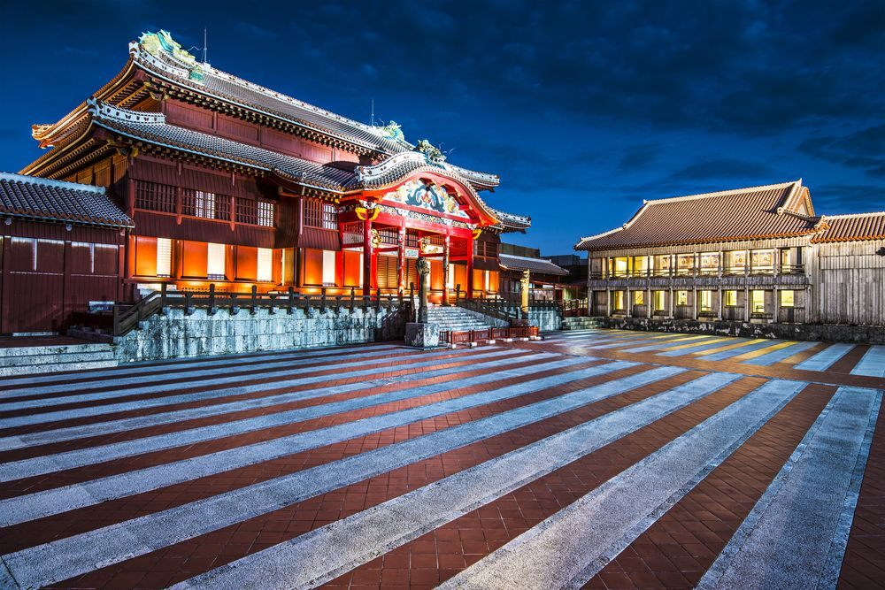
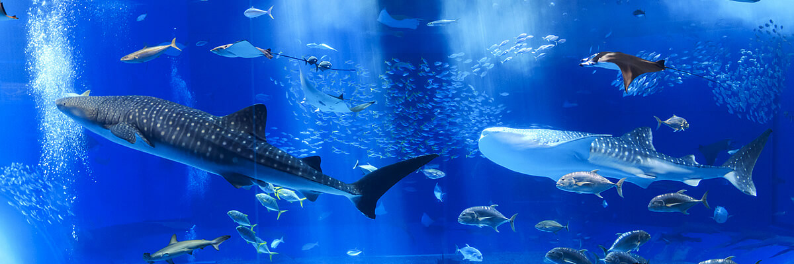

Experiencias y opiniones de visitantes recientes
Castillo Shurijo
Fuente hisgo.com
5/5 Es uno de los lugares mas visitados, el castillo es hermoso y se explica mucho de su historia, es un recorrido agradable, y no es muy cansado con accesos para las personas invalidas, el costo es razonable, tiene poco letreros en ingles pero los suficientes para conocer y entender bien el ambiente que se manejaba en esa epoca, y al final puedes ir al parque que esta a lado tambien es muy bonito.
3/5 El castillo es una de las paradas obligadas en Naha, pero personalmente no me emocionó. El castillo es bonito, y tiene algunas exposiciones interesantes en su interior de arte japonés; el problema es que es una reconstrucción bastante reciente y la falta de antiguedad le resta atractivo.
4/5 Buena visita para conocer historia de Okinawa. Si tienes un Day Pass del monorail puedes obtener descuento en la entrada. El castillo esta muy bien reedificado, trabajaron muy detalladamente para hacerlo como era, se puede ver vídeos de como lo reconstruyeron y también se puede ver representaciones de bailes típicos. Está en un cerro, por lo que hay que estar dispuestos a subir escaleras altas o caminos empinados y todo el recorrido es al aire libre, solo una parte es al interior, si llueve es poco conveniente ir.
Acuario Okinawa Churaumi
5/5 Es un lugar hermoso! Imperdible! Puesto que la costa de la isla es de corales su flora y fauna marina es muy variada y hermosa. Todo el recorrido es bajo techo y un poco oscuro, y siempre hay mucha gente! La piscina de los delfines está ubicada al aire libre, y se puede ver cómo entrenan a los delfines. Es maravilloso.
5/5 Es uno de los mejores acuarios que he visto en el mundo (tal vez después del acuario de Curazao), sobre todo el túnel de tiburones y manta rayas es impactante. Puedes ver estos animales marinos a unos centímetros de distancia. El Show de los delfines también es interesante. Antes del show, los delfines nos estaban observando a ver quienes son los visitantes.
¿Quieres vivir la experiencia por ti mismo? Da click aqui y te invitamos a volver a dejar el tuyo despues de tu viaje ╰(*°▽°*)╯